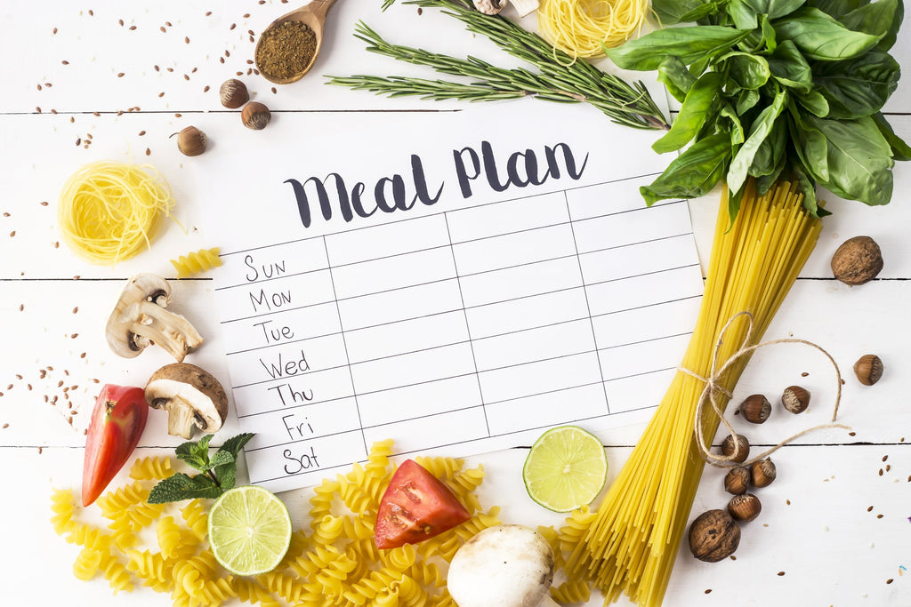
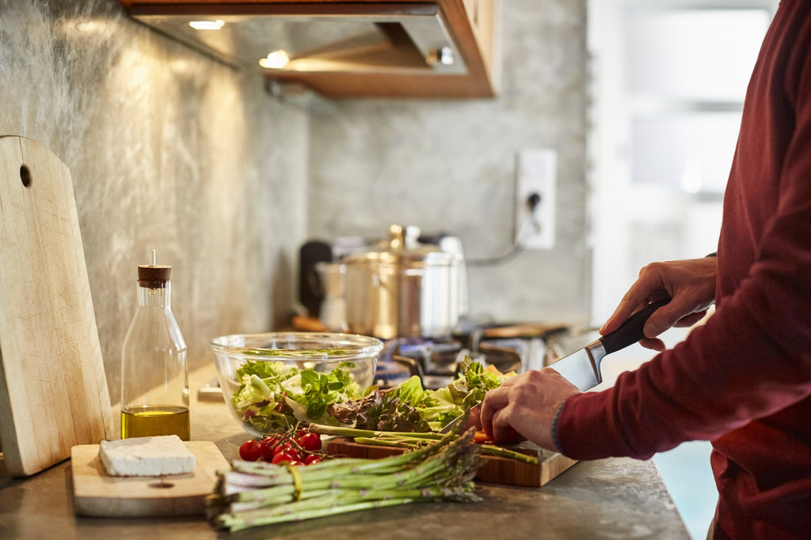

5 Ways to Prioritize a Healthy Organic Diet
- by Nature's Path 4 January 2025

As the new year approaches, one of your resolutions may be to make healthier food choices. It may seem overwhelming at first, but it doesn’t have to be. We have put together some helpful ways to incorporate organic products into your healthy diet. It's not only thinking about it, but this includes planning and understanding food labels. First let’s define what eating organic is. According to the U.S. Department of Agriculture the term “Organic” is food that is free from processed and synthetic fertilizers, pesticides, and weedicides in both produce, grains, and animal products including:
5 ways you can prioritize a healthy organic diet
1. Plan your meals
2. Understand the nutrition labels
3. Focus on organic produce, grains, dairy, and protein
4. Eat at home
5. Commit to an eating schedule
Plan your Meals
When planning to adopt an organic diet, it helps to plan your meals in
advance. Whether you use an online tracker, a
spreadsheet, or a list, keeping track of your meals is vital when it comes to eating healthy and
organically.
Begin by drafting potential meals for the week. Find healthy recipe inspiration here. Once
you’ve solidified your meal
plan, list the recipes and ingredients for each one. You can list them by category, for example
vegetables, fruits,
protein, oils etc. Whether you plan to make golden turmeric overnight oats for breakfast or
fresh vegetables, quinoa and
tofu for dinner, planning your meals will help you stay organized. An added bonus is that
planning a shopping list often
helps with staying within your grocery budget as well.
Pick a day that works for you to go grocery shopping and prepare your meals. It may seem like a
lot of work upfront, but
you'll see how smoothly your week goes and can ensure your diet is filled with organic foods
that you need to stay
healthy.
Understand the nutrition labels
Understanding nutrition labels is good practice when you’re making healthier choices. You don’t
have to be an expert at
reading labels, however, having a basic understanding of what you are putting in your body will
be a helpful part of
your journey.
Here is a tip, instead of selecting generic versions of foods, look for foods with labels that
read “Organic” or “USDA
Certified ''. Generally, it will be labeled on the front of the packaging, in letters or in
large print. You should be
able to find the organic call out on both the front panel, as well as on the information panel
of the product. For
example, Nature’s Path Organic Heritage Flakes Cereal uses organic callouts in a number of ways.
Explore our product
page to get familiar with where they may be found.
For additional helpful information on organic labeling in the U.S., visit USDA. GOV- Organic
Products. However, don’t
stress too much about the percentages, being mindful of what the claims mean is a great start.
Keep in mind, anything
that has an organic label is better than the conventional processed foods.
Focus on Organic Produce, Grains, Dairy, and Protein
Keeping a healthy organic diet is all about focusing on the food itself. Eating a wide variety
of vegetables, fruits,
grains, protein, and dairy products is important. It can help you meet your daily nutritional
requirements while also
providing you with the essential vitamins, minerals, and fiber your body needs.
Fruits and vegetables are important because they are high in fiber, vitamins, and minerals and
low in fat. In addition,
it's also an important source of antioxidants that help your body fight off free radicals. Keep
in mind that some fruits
and vegetables contain high levels of pesticides so either buy organic or grow your own produce
if you can.
Whole Grains are rich in fiber and other nutrients that are often removed during processing.
Whole grains also contain
antioxidant compounds called phytochemicals which help lower your risk for chronic diseases like
cancer and heart
disease. To learn more about these compounds, read this article by Zhang YJ et al. (2015). The
easiest way to make sure
you're eating whole grains is to look for products labeled ”100% whole grain.
Protein and dairy products are also essential for your body. However, there is a greater
nutritional benefit when it's
organic because it contains omega-3 fatty acids and more antioxidants, and no hormones or
pesticides.
Eat at Home
Home cooking is a great way to prioritize a healthy organic diet because you
know exactly what products and ingredients
go into your body. Although going out to a restaurant is convenient, you cannot be certain what
ingredients are in their
foods; some restaurant foods can be highly processed and unhealthy.
Instead, purchase good quality organic products from your local grocery store and prepare a meal
for yourself and your
family. This way you will save money and your body will feel better.
If you are in a rush in the morning make a quick yogurt parfait with Hemp Hearts granola or a
tasty gluten-free cereal
with a splash of your favorite organic nut milk.
Commit to an Eating Schedule
Committing to an eating schedule everyday can help you feel more in control
of your eating habits. When you decide to
eat at certain times, you create a routine that will help you stay on track with consuming more
healthy organic foods.
The time you eat does not matter. Most people have their lunch, midday or around 12 p.m. and
avoid eating 2-3 hours
before bedtime.
According to a few studies published on ScienceDaily.com, eating irregularly puts you at risk
for high blood pressure,
type 2 diabetes, and obesity. As you prepare your meals, make a mental note of when you plan to
eat breakfast, lunch,
and dinner. The best part, if you make food you’re excited to eat, you’ll find yourself looking
forward to each meal and
sticking to the best times to enjoy them.
Planning and learning to take control of your health is the key to maintaining a healthy organic
diet. Remember that
it's not about being perfect but being aware and purposeful. That is what will help you succeed
in your health journey.
Find organic products you look forward to enjoying and remember that small changes can make a
big impact. Nature’s Path
products are “Always Organic”. They taste delicious and can help in your healthy eating journey.
Explore our organic
products here. We also offer other organic options that are vegan and gluten-free.